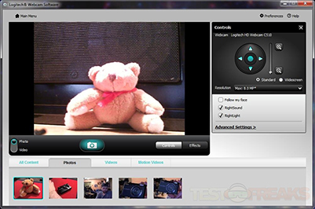

I'm still looking for which direction I should go for so I made my moodboards into two main categories, Web-based and Mobile-based. For the web-based design, I want to combine computer generated art with the website design interface. I really like this example below because of its beautiful randomly generated computer art pattern and its simple and bold color theme. It looks simple as well as really beautiful. I want to make my website look simple too and has a bold color theme.
I'm also thinking about making some cute graphics (like below) in order to create a cute hand-drawn look for the website.
Also, I'm definitely looking for building a website that all the content is included within one page and users can scroll up and down for navigation.
I also looked up some webcam website interface and here're what I found.
For the mobile-based design, I want to make it viewable on the phone (making an app). I saw several examples online and want to make my design look simple as well. I want to focus on using the cool color tones for the color of my interface.
I also really like Snapchat's user interface so I decided to make each of my filter button circle shaped, just like Shapchat app does, so that the overall visual looks more simple, clean and modern.